Target Application: European Patent Application EP 4523100.3 / PCT/US2023/019103 ("Split Stay Ranking and Matching")
Applicant: Airbnb, Inc.
Page Reference: Page 1 of 20 | Annex Reference: ANNEX-V-001
Corresponds to Claim: System Identity & Operator Provenance
Source Text Excerpt: Cross-reference records connecting GoDaddy (`www.malindi-dg.com`), DreamHost (`www.hotels-plus.net`), and Internet Archive captures establishing brand and infrastructure continuity.
Page Reference: Page 1 of 6 (p. 2 of 20) | Annex Reference: ANNEX-V-002
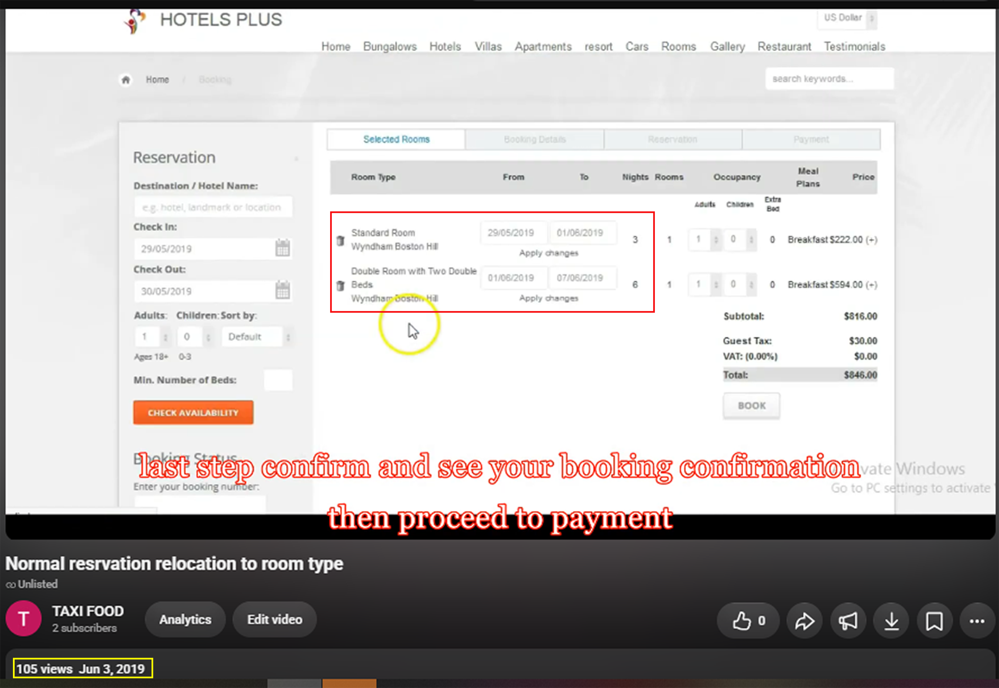
Corresponds to Claim: Claim 1 : CORE / multi-property booking record.
Source Text Excerpt: Video demonstration captures: "Normal reservation relocation to room type" (uploaded June 3, 2019) and "hotel relocation multi rooms" (uploaded May 30, 2019)
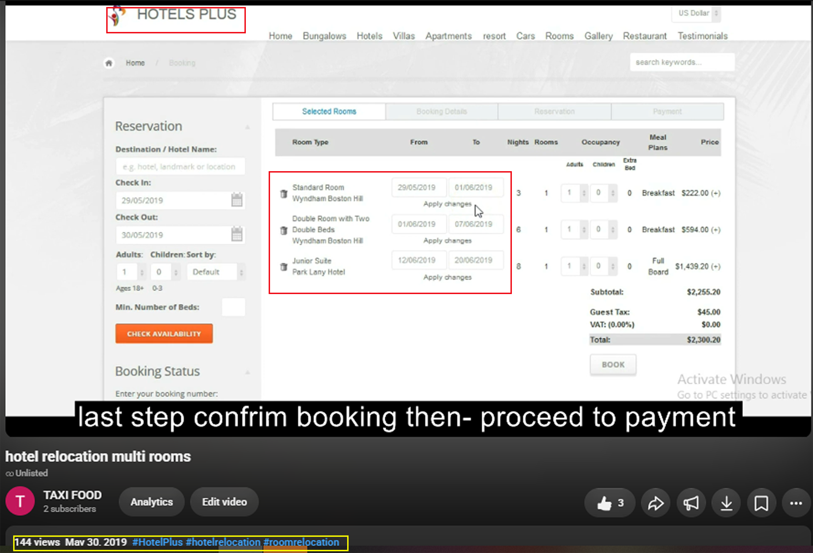
Corresponds to Claim: Claim 1 : CORE / multi-property booking record.
Source Text Excerpt: Cross Reference EXHIBIT D-03A / Annex-D-010
Page Reference: Page 2 of 6 (p. 3 of 20) | Annex Reference: ANNEX-V-003
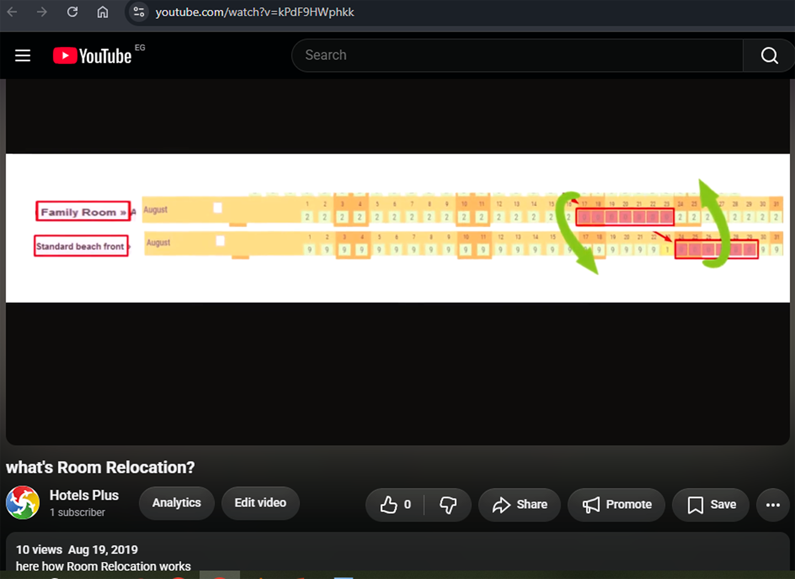
Corresponds to Claim: Claim 1 : CORE / multi-property booking record.
Source Text Excerpt: YouTube video disclosures explaining how Hotels-plus.net combines occupancy gaps among room types to create full stays (Published Aug 19, 2019 and Sept 6, 2019).
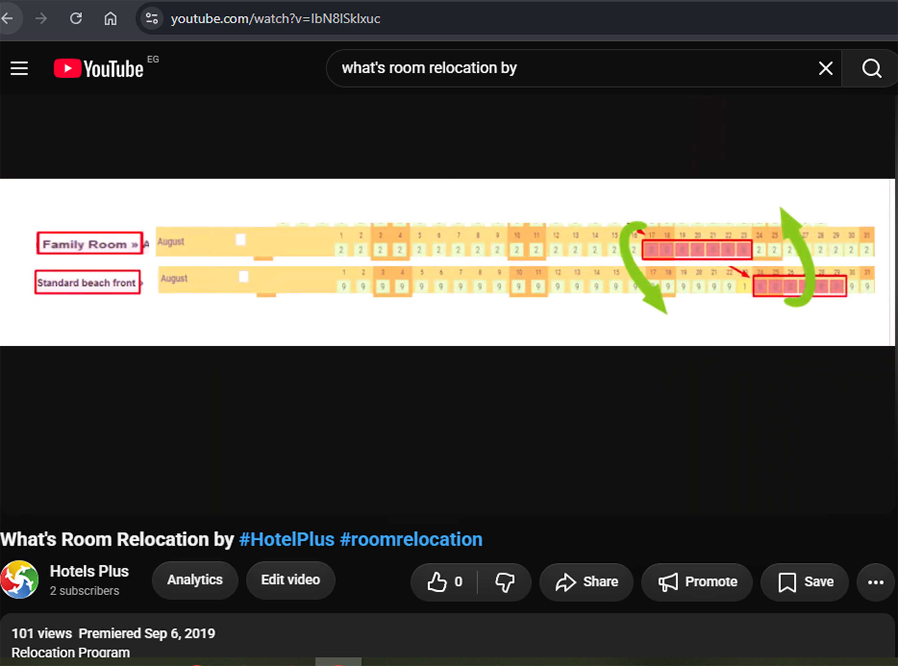
Corresponds to Claim: Claim 1 : CORE / multi-property booking record.
Source Text Excerpt: YouTube video disclosures explaining how Hotels-plus.net combines occupancy gaps among room types to create full stays (Published Aug 19, 2019 and Sept 6, 2019).
https://youtu.be/IbN8lSklxuc?si=yO_xMcdNGA8W-aGe At [0:30/1:35]
Page Reference: Page 3 of 6 (p. 4 of 20) | Annex Reference: ANNEX-V-004
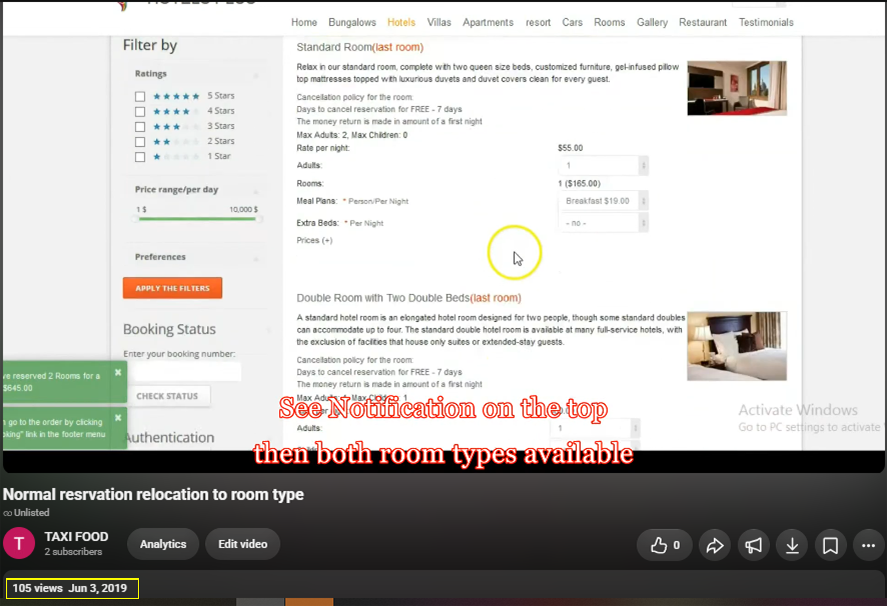
Corresponds to Claim: Claim 1 : CORE / multi-property booking record.
Source Text Excerpt: Live demonstration capturing top notification interface showing combined room availability ("See Notification on the top then both room types available", uploaded May 30, 2019 and June 3, 2019).
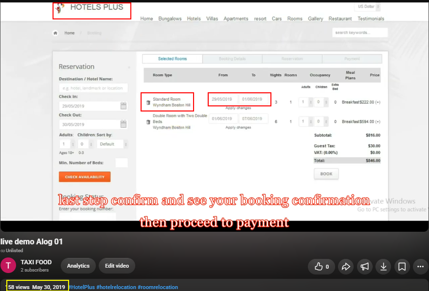
Corresponds to Claim: Claim 1 : CORE / multi-property booking record.
Source Text Excerpt: Live demonstration capturing top notification interface showing combined room availability ("See Notification on the top then both room types available", uploaded May 30, 2019 and June 3, 2019).
Cross Reference EXHIBIT D-01B / Annex-D-0014
Page Reference: Page 4 of 6 (p. 5 of 20) | Annex Reference: ANNEX-V-005
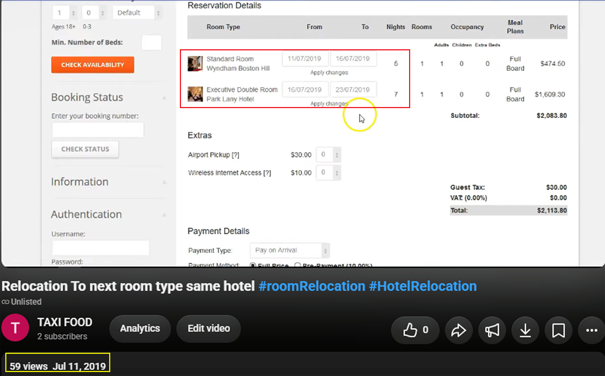
Corresponds to Claim: Claim 1 : CORE / multi-property booking record.
Source Text Excerpt: https://youtu.be/2E4u20FaRq4?si=ezvDg1ySQ27xuxTl at (1:08/01:25).
Hotel Relocation”Cross Reference EXHIBIT D-01B / ANNEX-V-005
The Google distance API was not activated during this recording. The video is therefore relied upon for the demonstrated hotel-relocation workflow, not for an API-generated distance calculation. The relocation shown includes a change from a Standard room to an Executive Suite. The guest did not apply a filter requiring the replacement accommodation to have the same room level/type.
Page Reference: Page 5 of 6 (p. 6 of 20) | Annex Reference: ANNEX-V-006
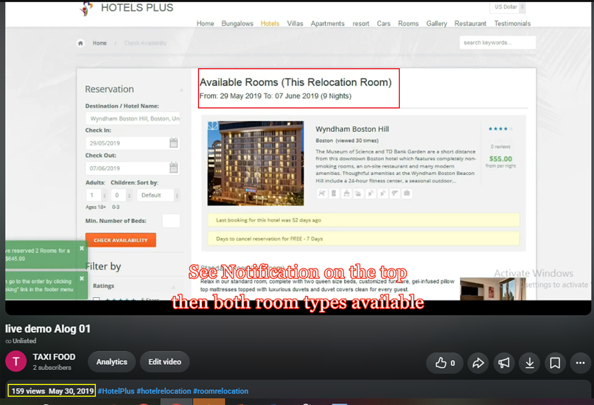
Corresponds to Claim: Claim 1 : CORE / multi-property booking record.
Source Text Excerpt: Screen capture from video `https://youtu.be/GaLMILBXNXc` (uploaded May 30, 2019) showing room relocation notification and availability presentation
Room Relocation”
Cross Reference EXHIBIT D-03C / ANNEX-D-018
Page Reference: Page 6 of 6 (p. 7 of 20) | Annex Reference: ANNEX-V-007
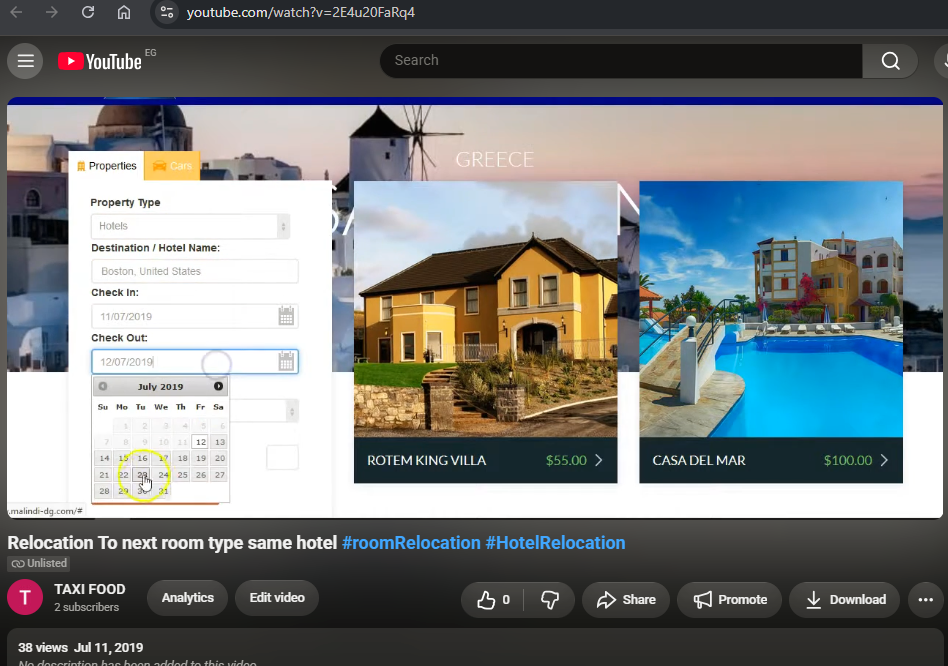
Corresponds to Claim: Claim 1 : CORE / multi-property booking record.
Source Text Excerpt: Vhttps://youtu.be/2E4u20FaRq4?si=uNvyhhlTDRw9tfdk At(0:05/01/25).
Domain www.Malindi-deg.com
Domain Infrastructure / Cross-reference / EXHIBIT D-05F / Annex-D-026
Pitch Deck July 2019 / Cross Reference EXHIBIT D-03C1 / Annex-D-013
Page Reference: Page 1 of 4 (p. 8 of 20) | Annex Reference: ANNEX-V-008
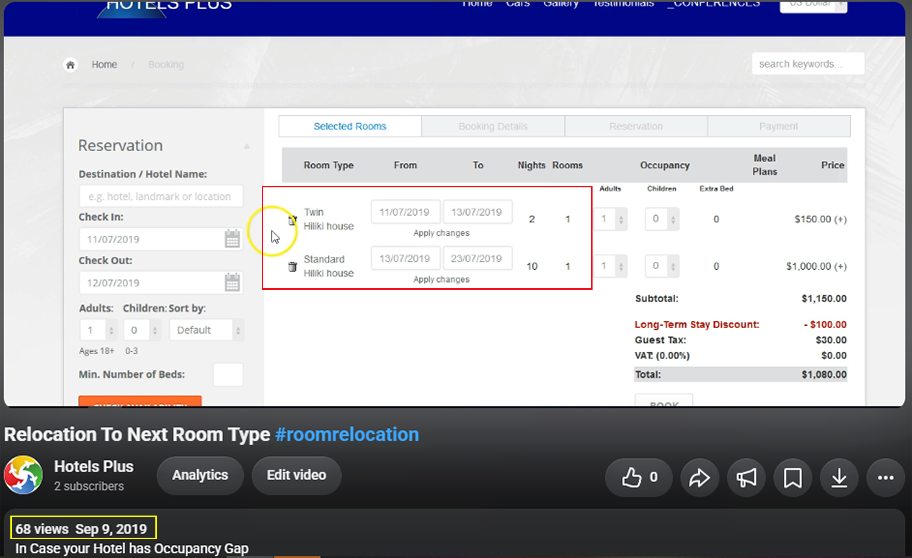
Corresponds to Claim: Claim 1 : CORE / multi-property booking record.
Source Text Excerpt: Multi-segment room split stay search result combining Twin Room and Standard Room at Hiliki House (uploaded Sept 9, 2019).
Page Reference: Page 2 of 4 (p. 9 of 20) | Annex Reference: ANNEX-V-009
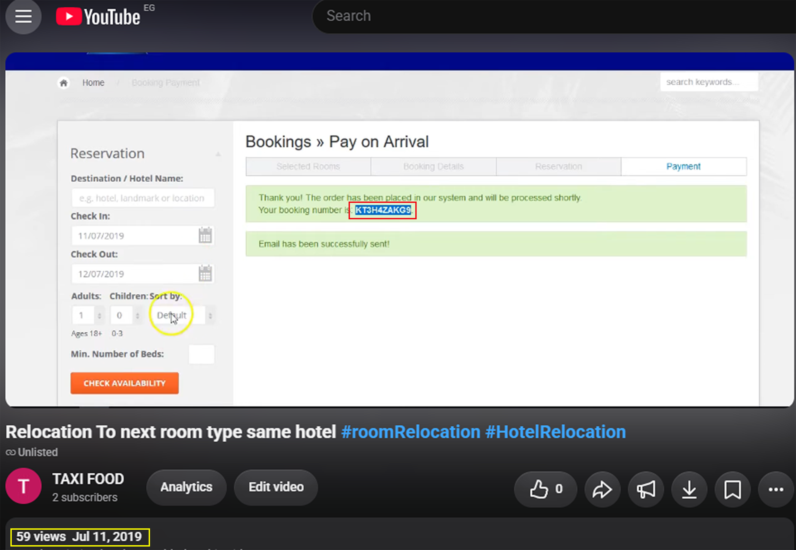
Corresponds to Claim: Claim
Source Text Excerpt: Booking confirmation ID `M5XEPDJCJC` generated on July 11, 2019, corroborated by relational DB record insert.
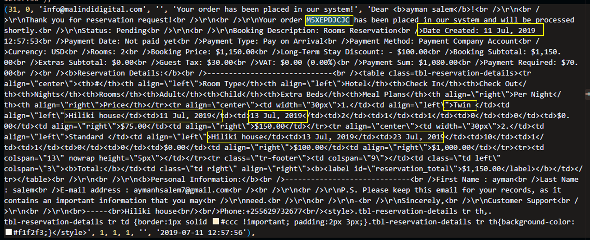
Corresponds to Claim: Claim 1 : CORE / multi-property booking record.
Source Text Excerpt: Booking confirmation ID `M5XEPDJCJC` generated on July 11, 2019, corroborated by relational DB record insert
Page Reference: Page 3 of 4 (p. 10 of 20) | Annex Reference: ANNEX-V-010
Corresponds to Claim: Claim 1 : CORE / multi-property booking record.
Source Text Excerpt: Travel agent portal on `www.hotels-plus.net` processing room relocation bookings across multi-segment stays (uploaded Nov 5, 2019).
Domain www.hotels-plus.net
https://youtu.be/fsRh-98KC-w?si=VQsR8L27TDC1008h
Travel Agent Login Room Relocation at (01:18/03:34)
Booking confirmation / Cross Reference EXHIBIT D-07H / ANNEX-D-041
Page Reference: Page 4 of 4 (p. 11 of 20) | Annex Reference: ANNEX-V-011
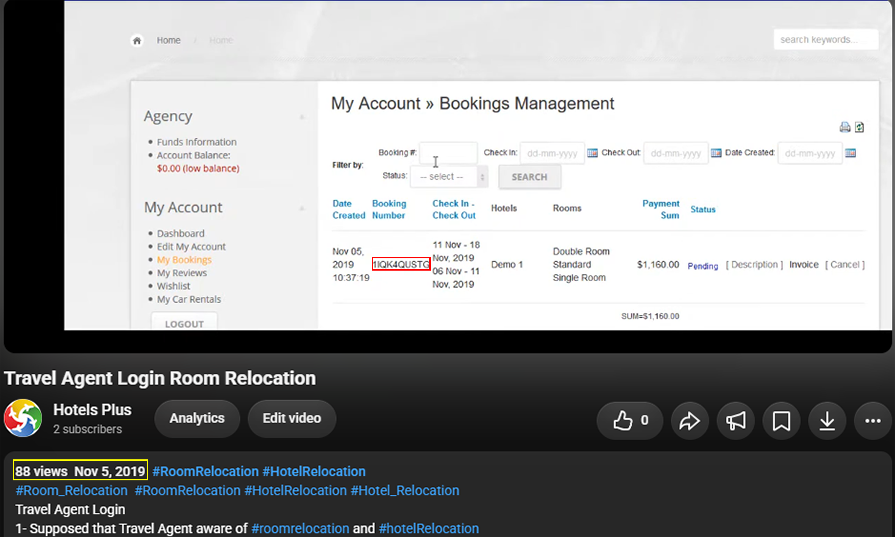
Corresponds to Claim: Claim /p>
Source Text Excerpt: Travel agent booking management interface cross-referenced with exact `uhb_new_bookings_rooms` SQL insert query for booking `1IQK4QUSTG`.
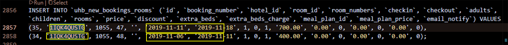
Source Text Excerpt: Travel agent booking management interface cross-referenced with exact `uhb_new_bookings_rooms` SQL insert query for booking `1IQK4QUSTG`.
https://youtu.be/fsRh-98KC-w?si=cTTsdUHQuKzrkr3L
Travel Agent Login Room Relocation at [2:25/3:46]
Cross-Refence EXHIBIT D-07H: Anex-D-041
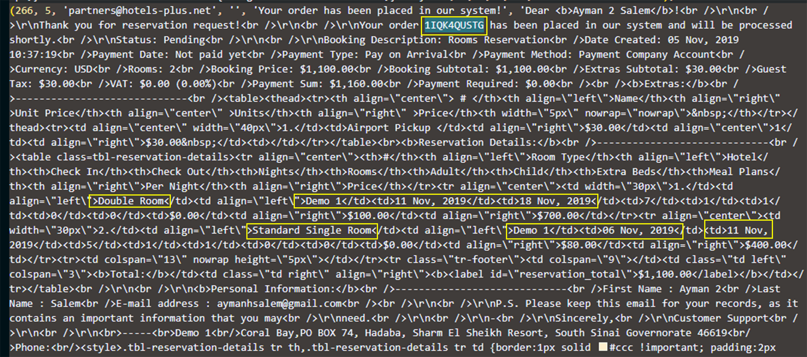
Source Text Excerpt: Travel agent booking management interface cross-referenced with exact `uhb_new_bookings_rooms` SQL insert query for booking `1IQK4QUSTG`.
https://youtu.be/fsRh-98KC-w?si=cTTsdUHQuKzrkr3L
Travel Agent Login Room Relocation at [2:25/3:46]
Cross-Refence EXHIBIT D-07H: Anex-D-041
Page Reference: Page 1 of 2 (p. 12 of 20) | Annex Reference: ANNEX-V-012
Corresponds to Claim: Claim 1 : CORE / multi-property booking record.
Source Text Excerpt: Recording inter-hotel relocation combining Wyndham Boston Hill (5 nights) and Park Lany Hotel (7 nights) (uploaded Sept 7, 2019).
https://youtu.be/0vpWGo1XRMs?si=gCjOw5v4aIYFRom8 at [1:09/1:25]
Page Reference: Page 2 of 2 (p. 13 of 19) | Annex Reference: ANNEX-V-013
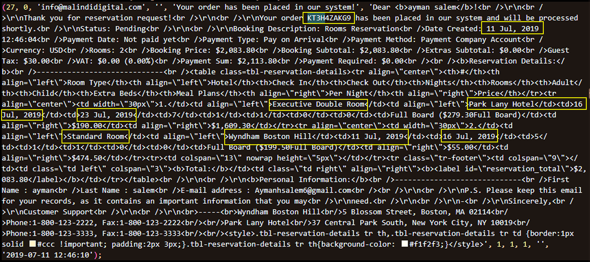
Corresponds to Claim: Claim 1 : CORE / multi-property booking record
Source Text Excerpt: System order confirmation `KT3H4ZAKG9` dated July 11, 2019, logging multi-property itinerary details and pricing in backend DB.
div class="img-container full-width">Source Text Excerpt: System order confirmation `KT3H4ZAKG9` dated July 11, 2019, logging multi-property itinerary details and pricing in backend DB.
Page Reference: Page 1 of 9 (p. 14 of 19) | Annex Reference: ANNEX-V-014
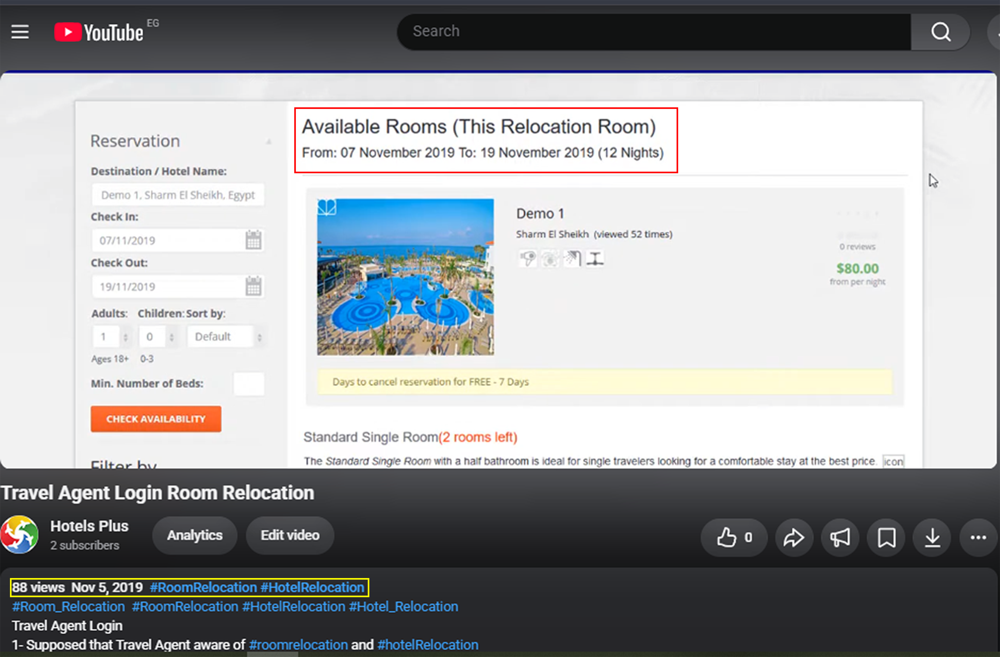
Corresponds to Claim: Claim 1 : CORE / multi-property booking record.
Source Text Excerpt: Automated lodging search interface in Sharm El Sheikh for multi-day request (07 Nov. 2019 to 19 Nov 2019) with stay modification capabilities.
Backend automatically processes lodging details to satisfy client specified criteria to book the room from “07-19, Nov. 2019
https://youtu.be/fsRh-98KC-w?si=EMsTGQM-oVADQqFQAt [0:58/3:48]
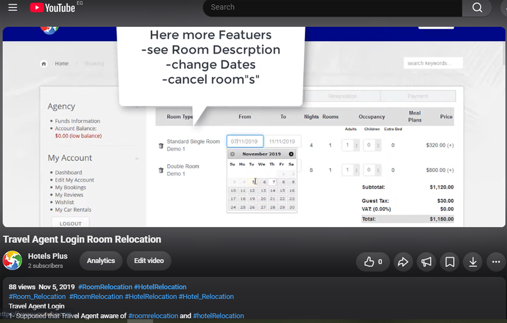
Corresponds to Claim: Claim 1 : CORE / multi-property booking record.
Source Text Excerpt: .
Page Reference: Page 2 of 9 (p. 16 of 19) | Annex Reference: ANNEX-V-016
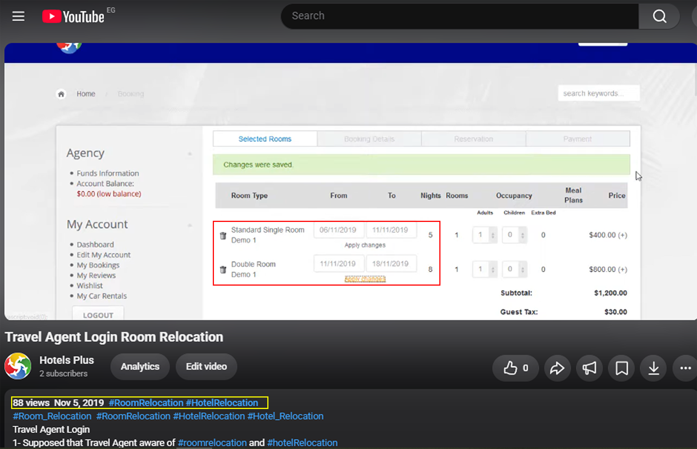
Corresponds to Claim: Claim 1 : CORE / multi-property booking record.
Source Text Excerpt: Automatic verification and rebooking workflow upon date modification, generating split-stay booking confirmation ID `1IQK4QUSTG`.
Page Reference: Page 1 of 9 (p. 15 of 19) | Annex Reference: ANNEX-V-015
Corresponds to Claim: Third-Party Public Disclosure Baseline
Source Text Excerpt: Public video uploaded May 30, 2019 (`youtu.be/82XxQouNwQc`), distributed without restriction on open LinkedIn group with 320,000+ members.
Cross Reference EXHIBIT D-09L / LinkedIn Post PUBLIS Group – 2019 /ANNEX-D-047
Corresponds to Claim: Third-Party Public Disclosure Baseline
Source Text Excerpt: Public video uploaded May 30, 2019 (`youtu.be/82XxQouNwQc`), distributed without restriction on open LinkedIn group with 320,000+ members.
Page Reference: Page 3 of 9 (p. 17 of 19) | Annex Reference: ANNEX-V-017
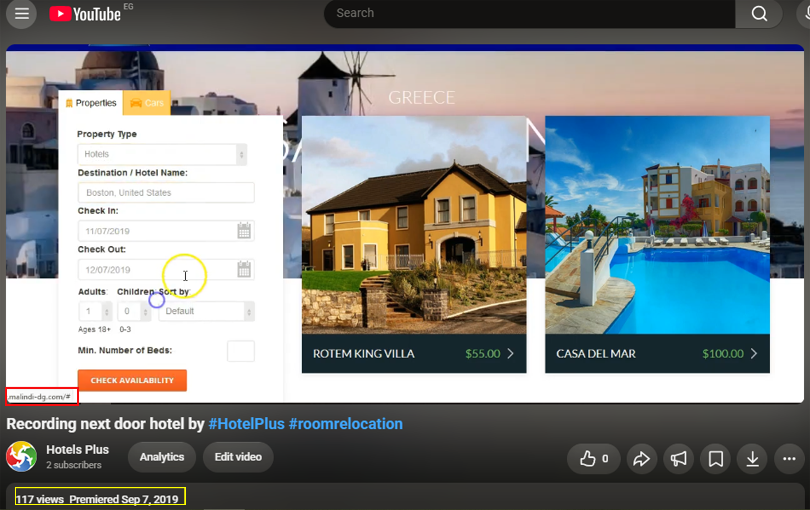
Corresponds to Claim: Claim 1 : CORE / multi-property booking record.
Source Text Excerpt: Live Server Booking Interface / July 201 (`malindi-dg.com`) processing hotel reservation search on July 11, 2019.
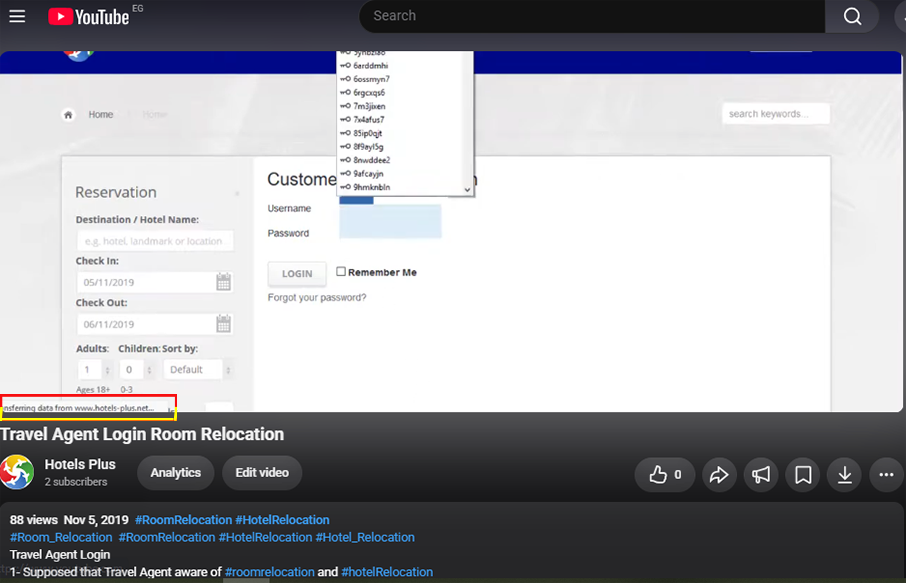
Corresponds to Claim: Claim 1 : CORE / multi-property booking record.
Source Text Excerpt: Live server connection (`malindi-dg.com`) processing hotel reservation search on July 11, 2019.
Page Reference: Page 4 of 9 (p. 18 of 19) | Annex Reference: ANNEX-V-018
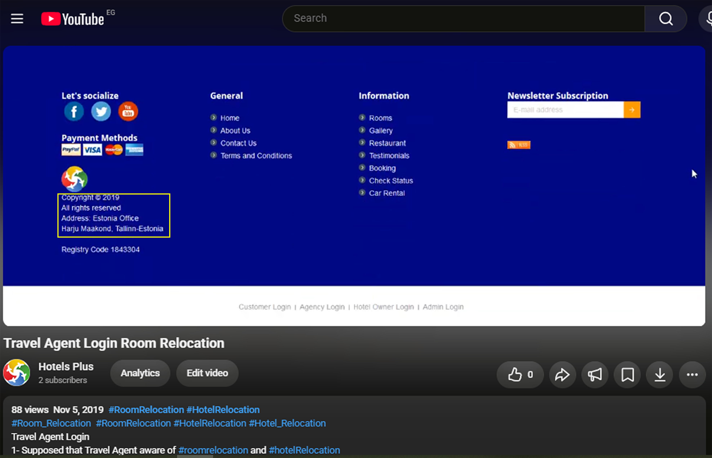
Corresponds to Claim: Corporate Identity & Rights Ownership
Source Text Excerpt: System footer displaying "Copyright 2019 All rights reserved. Address: Estonia Office Harju Maakond, Tallinn-Estonia Registry Code 14804245"
Page Reference: Page 5 of 9 (p. 20 of 20) | Annex Reference: ANNEX-V-019
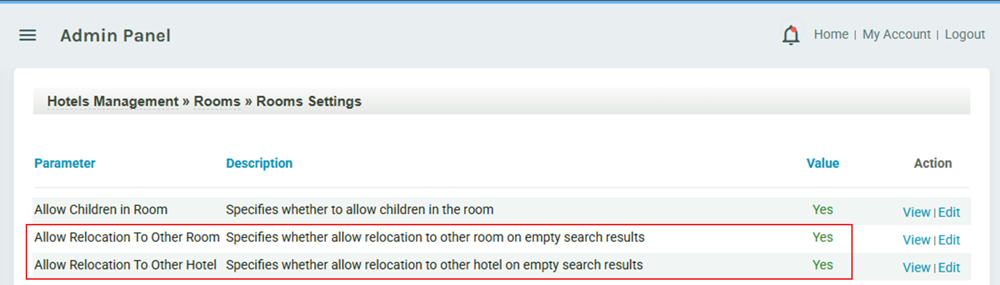
Corresponds to Claim: Claim 1 : relocation controls / CORE
Source Text Excerpt: Admin control panel configuration showing `Allow Relocation To Other Room` = Yes and `Allow Relocation To Other Hotel` = Yes.
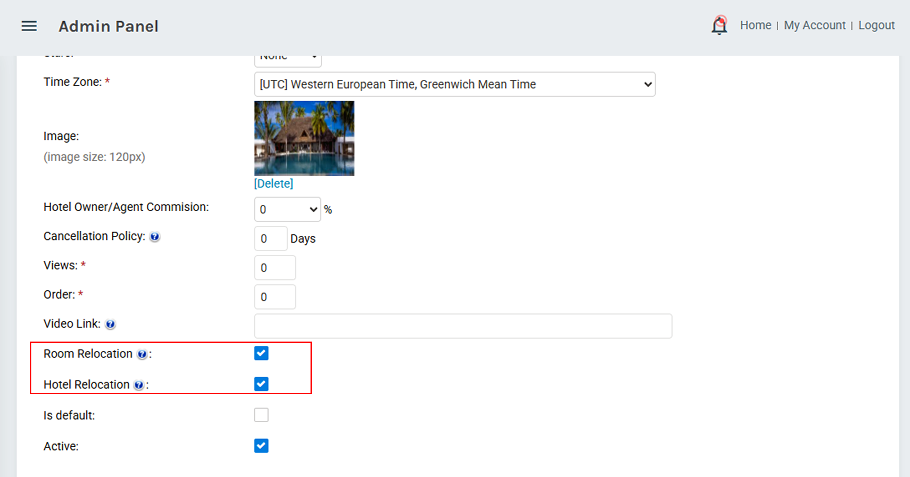
Corresponds to Claim: Claim 1 : relocation controls / CORE
Source Text Excerpt: Admin control panel configuration showing `Allow Relocation To Other Room` = Yes and `Allow Relocation To Other Hotel` = Yes.
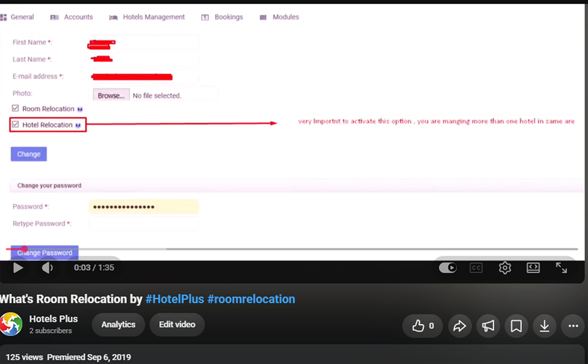
Corresponds to Claim: Claim 1 : relocation controls / CORE
Source Text Excerpt: Admin control panel configuration showing `Allow Relocation To Other Room` = Yes and `Allow Relocation To Other Hotel` = Yes.
Page Reference: Page 5 of 9 (p. 20 of 20) | Annex Reference: ANNEX-V-020
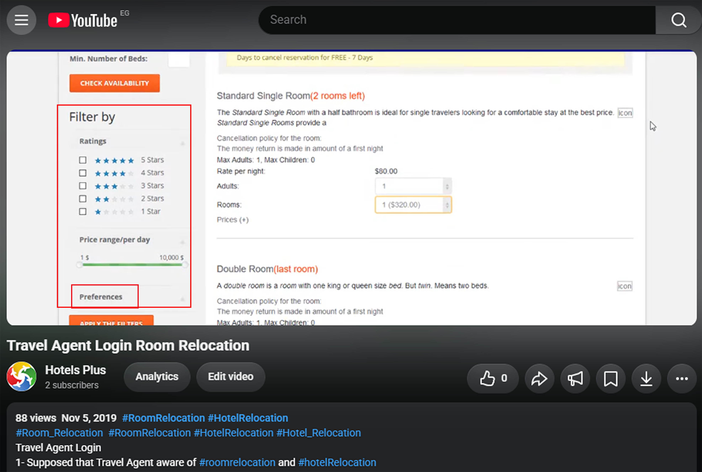
Corresponds to Claim:Search criteria and accommodation filtering
Source Text Excerpt: The captured interface displays search-filter and facility-selection options used to refine accommodation results. These controls are presented as user-facing search criteria. The exhibit is relied upon to document the available filtering interface, not to establish that such filters implement the underlying split-stay or relocation mechanism.
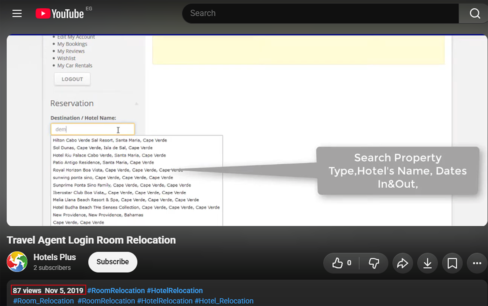
Corresponds to Claim: Search criteria and accommodation filtering
Source Text Excerpt: The captured interface displays search-filter and facility-selection options used to refine accommodation results. These controls are presented as user-facing search criteria. The exhibit is relied upon to document the available filtering interface, not to establish that such filters implement the underlying split-stay or relocation mechanism
Evidence Presentation Note: This matrix maps the visual, documentary-on-screen, and demonstrated booking evidence in Annex V to the corresponding limitations of the current claims. The observations distinguish the operations visibly demonstrated by the exhibits from limitations that are not independently established by visual evidence. Relevant technical implementation and documentary provenance are addressed in Annex T and Annex D, respectively.
| Target Claim No. | Claim Text (Verbatim) | Corresponding Visual Exhibit | Annex Page Ref | Evidence Observation |
|---|---|---|---|---|
| Claim 1 — Overall method / CORE | "A method comprising: storing (905), by a network site, a plurality of listings from a plurality of different posting end-users; receiving (910), from a searching end-user, a listing request for one or more of the listings posted to the network site, the listing request specifying a multiple-day length of stay parameter; determining (915) that the multiple-day length of stay parameter of the listing request transgresses a minimum length of stay threshold; identifying a set of individual listings of the plurality of listings that match the listing request; determining that a quantity of listings in the set of individual listings fails to satisfy a minimum available inventory threshold; in response to determining that (i) the multiple-day length of stay parameter of the listing request transgresses the minimum length of stay threshold and (ii) the quantity of listings in the set of individual listings fails to satisfy the minimum inventory threshold, generating (920) a combined listing (520) comprising a first listing of the plurality of listings associated with a first portion of the multiple-day length of stay parameter and a second listing of the plurality of listings associated with a second portion of the multiple-day length of stay parameter; and causing (925), on a user device of the searching end-user, presentation of the combined listing together with one or more other listings of the plurality of listings that match the listing request in a ranked order." | Exhibits V-001, V-002, V-003, V-004, V-005, V-006, V-007, V-008, V-009, V-010, V-011, V-012, V-013, V-014, V-016, V-017, V-018, V-019 and V-020 |
ANNEX-V-001 (p. 1) ANNEX-V-002 (p. 2) ANNEX-V-003 (p. 3) ANNEX-V-004 (p. 4) ANNEX-V-005 (p. 5) ANNEX-V-006 (p. 6) ANNEX-V-007 (p. 7) ANNEX-V-008 (p. 8) ANNEX-V-009 (p. 9) ANNEX-V-010 (p. 10) ANNEX-V-011 (p. 11) ANNEX-V-012 (p. 12) ANNEX-V-013 (p. 13) ANNEX-V-014 (p. 14) ANNEX-V-016 (p. 16) ANNEX-V-017 (p. 17) ANNEX-V-018 (p. 18) ANNEX-V-019 (p. 19) ANNEX-V-020 (p. 20) |
The visual record documents the historical booking interface, room-relocation and hotel-relocation workflows, multi-segment stay presentations, booking confirmations, and administrative relocation controls. Taken together, these exhibits provide visual context for the underlying split-stay and relocation operation. The visual exhibits are not individually relied upon to establish every limitation of Claim 1, particularly the precise two-condition trigger, the claimed threshold logic, or a specific ranking algorithm. The corresponding implementation evidence is mapped separately in Annex T, and chronology and provenance are addressed in Annex D. |
| Claim 1 — Receiving the multi-day request | "...receiving (910), from a searching end-user, a listing request for one or more of the listings posted to the network site, the listing request specifying a multiple-day length of stay parameter..." | Exhibits V-002, V-008, V-010, V-012 and V-014 |
ANNEX-V-002 (p. 2) ANNEX-V-008 (p. 8) ANNEX-V-010 (p. 10) ANNEX-V-012 (p. 12) ANNEX-V-014 (p. 14) |
The demonstrations show lodging searches and requested stay dates, including multi-day and multi-segment stay scenarios. The visual record supports the existence of the user-facing request workflow; the underlying parameter parsing and duration calculation are addressed by the corresponding technical exhibits in Annex T. |
| Claim 1 — Minimum length-of-stay threshold | "...determining (915) that the multiple-day length of stay parameter of the listing request transgresses a minimum length of stay threshold..." | Exhibits V-003, V-014 and V-019 |
ANNEX-V-003 (p. 3) ANNEX-V-014 (p. 14) ANNEX-V-019 (p. 19) |
The visual exhibits show relocation-related search scenarios and administrative controls. They do not independently demonstrate the claimed comparison between the requested duration and a minimum length-of-stay threshold. The configured minimum/maximum-night constraints and their implementation are addressed in Annex T. |
| Claim 1 — Identifying matching listings | "...identifying a set of individual listings of the plurality of listings that match the listing request..." | Exhibits V-002, V-003, V-008, V-010, V-012 and V-014 |
ANNEX-V-002 (p. 2) ANNEX-V-003 (p. 3) ANNEX-V-008 (p. 8) ANNEX-V-010 (p. 10) ANNEX-V-012 (p. 12) ANNEX-V-014 (p. 14) |
The search demonstrations show accommodation results and relocation alternatives presented in response to lodging requests. They provide visual evidence of the search and results workflow. The matching query and its backend execution are addressed by the technical evidence in Annex T. |
| Claim 1 — Minimum available-inventory threshold | "...determining that a quantity of listings in the set of individual listings fails to satisfy a minimum available inventory threshold..." | Exhibits V-003, V-004, V-008 and V-016 |
ANNEX-V-003 (p. 3) ANNEX-V-004 (p. 4) ANNEX-V-008 (p. 8) ANNEX-V-016 (p. 16) |
The visual record shows room-relocation and split-stay scenarios in which accommodation is presented across different room or stay segments. The visuals alone do not establish that the system applies the particular minimum inventory threshold recited in Claim 1. The threshold enforcement path is addressed in Annex T. |
| Claim 1 — Generating a combined listing | "...in response to determining that (i) the multiple-day length of stay parameter of the listing request transgresses the minimum length of stay threshold and (ii) the quantity of listings in the set of individual listings fails to satisfy the minimum inventory threshold, generating (920) a combined listing (520) comprising a first listing of the plurality of listings associated with a first portion of the multiple-day length of stay parameter and a second listing of the plurality of listings associated with a second portion of the multiple-day length of stay parameter..." | Exhibits V-003, V-004, V-005, V-006, V-008, V-009, V-012, V-013 and V-016 |
ANNEX-V-003 (p. 3) ANNEX-V-004 (p. 4) ANNEX-V-005 (p. 5) ANNEX-V-006 (p. 6) ANNEX-V-008 (p. 8) ANNEX-V-009 (p. 9) ANNEX-V-012 (p. 12) ANNEX-V-013 (p. 13) ANNEX-V-016 (p. 16) |
The demonstrations show stays presented or booked across successive room or hotel segments, including room-type relocation and inter-hotel relocation. Booking records and confirmation displays corroborate the transactional context. These visuals support the historical split-stay/relocation operation. They do not, by themselves, establish that the combined result was generated only after both precise conditions recited in the amended Claim 1 were evaluated. That conditional logic is addressed in Annex T. |
| Claim 1 — Presentation of the combined result | "...causing (925), on a user device of the searching end-user, presentation of the combined listing together with one or more other listings of the plurality of listings that match the listing request in a ranked order." | Exhibits V-002, V-003, V-004, V-008 and V-014 |
ANNEX-V-002 (p. 2) ANNEX-V-003 (p. 3) ANNEX-V-004 (p. 4) ANNEX-V-008 (p. 8) ANNEX-V-014 (p. 14) |
The visual record shows search-result interfaces, relocation notifications, and combined stay presentations. It supports the presentation of relocation-related results. The visuals do not independently establish that a combined listing was ranked together with other matching listings according to the particular ranking operation recited in Claim 1. General result sorting and its implementation are addressed in Annex T; no specific ranking algorithm is inferred from the visuals alone. |
| Claim 1 — Booking and transaction corroboration | Claim 1's combined-listing and multi-segment stay operation, considered in the context of the associated booking workflow. | Exhibits V-008, V-009, V-010, V-011, V-012, V-013 and V-016 |
ANNEX-V-008 (p. 8) ANNEX-V-009 (p. 9) ANNEX-V-010 (p. 10) ANNEX-V-011 (p. 11) ANNEX-V-012 (p. 12) ANNEX-V-013 (p. 13) ANNEX-V-016 (p. 16) |
The exhibits show booking-management interfaces, multi-segment stay scenarios, confirmation information, and rebooking activity. They corroborate that the relocation workflow was associated with booking transactions rather than being limited to a static concept or mock-up. The corresponding database records and implementation are cross-referenced in Annex D and Annex T. |
| Claim 2 — Destination category | "The method of claim 1, wherein the listing request comprises a destination category, further comprising: determining that the first and second listings match the destination category, wherein the combined listing is generated in response to determining that the first and second listings match the destination category, optionally wherein the destination category comprises at least one of national parks, beaches, surfing, camping, theme parks, or skiing." | No presently identified visual exhibit independently establishes the claimed destination-category matching operation. | — | The present visual record documents accommodation search, room relocation, and hotel relocation. It does not independently establish that both listings are tested against a requested destination category and that generation of the combined listing is conditional on that match. |
| Claim 3 — Five-day minimum stay | "The method of claim 1, wherein the multiple-day length of stay parameter specifies a quantity of days or a flexible duration of stay, and wherein the minimum length of stay threshold comprises five days." | Exhibits V-012 and V-014 |
ANNEX-V-012 (p. 12) ANNEX-V-014 (p. 14) |
The visuals show multi-day requests and a hotel-relocation demonstration involving successive hotel stays. They do not independently establish a configured five-day threshold or a comparison against that threshold. The historical minimum/maximum-night configuration and database schema are addressed in Annex T. The visual evidence is relied upon for the demonstrated stay workflow, not as proof that the historical implementation used the same numerical threshold recited in Claim 3. |
| Claim 4 — Availability groups and profile-based aggregator | "The method of claim 1, wherein generating the combined listing comprises: identifying a subset of individual listings of the plurality of listings that satisfies one or more search criteria of the listing request independent of the multiple-day length of stay parameter; for each individual listing in the subset, generating a plurality of groups of stays on which the individual listing is available, each group of stays being associated with availability of the individual listing during different portions of the multiple-day length of stay parameter; refining the plurality of groups using an aggregator based on a user profile of the searching end-user; determining that a first combination of the portion of availability of a first refined group of a first individual listing (522) in the subset with the portion of availability of a second refined group of a second individual listing (524) matches the multiple-day length of stay parameter; and in response to determining that the first combination matches the multiple-day length of stay parameter, forming the combined listing based on the first refined group of the first individual listing and the second refined group of the second individual listing, optionally wherein: each of the different portions comprises a set of days starting from a start date and ending prior to an end date, and wherein each of the different portions comprises a set of days starting from a date later than the start date and ending on the end date, or a first group of the stays on which the individual listing is available comprises a first half of the multiple-day length of stay parameter, and wherein a second group of the stays on which the individual listing is available comprises a second half of the multiple-day length of stay parameter." | Exhibits V-008, V-009, V-010, V-011, V-012 and V-013 |
ANNEX-V-008 (p. 8) ANNEX-V-009 (p. 9) ANNEX-V-010 (p. 10) ANNEX-V-011 (p. 11) ANNEX-V-012 (p. 12) ANNEX-V-013 (p. 13) |
The visuals document segmented stays, relocation workflows, booking-management interfaces, and booking confirmations. They do not independently establish the specific claimed generation of multiple availability groups, refinement of those groups by an aggregator based on the searching end-user's profile, or the claimed combination-selection procedure. Customer-linked and booking-related technical structures are separately addressed in Annex T. Those structures should not be treated as visual proof of the specific aggregator operation. |
| Claim 5 — Ranking and selecting between combinations | "The method of claim 4, further comprising: determining that a second combination of the portion of availability of the first refined group of the first individual listing with the portion of availability of a third refined group of a third individual listing matches the multiple-day length of stay parameter; computing a rank for the first and second combinations; and selecting either the first or second combination to generate the combined listing based on the computed rank of the first and second combinations." | Exhibits V-002, V-003, V-004 and V-008 |
ANNEX-V-002 (p. 2) ANNEX-V-003 (p. 3) ANNEX-V-004 (p. 4) ANNEX-V-008 (p. 8) |
The visual record shows search-result presentation and relocation-related alternatives. It does not independently establish the generation of two candidate combinations, computation of a rank for each combination, and selection between them based on those computed ranks. |
| Claim 6 — Ranking based on individual listing ranks | "The method of claim 5, wherein the rank for the first and second combinations is computed based on individual ranks of the first, second and third individual listings." | Exhibits V-002, V-004 and V-008 |
ANNEX-V-002 (p. 2) ANNEX-V-004 (p. 4) ANNEX-V-008 (p. 8) |
The visuals show search-result interfaces and the presentation of relocation-related results. They do not reveal a combination-ranking calculation derived from the individual ranks of three listings. No such calculation is inferred from the appearance or order of the displayed results. |
| Claim 7 — Difference-based combination ranking | "The method of claim 5, wherein computing the rank for the first and second combinations comprises: computing a first difference between the portion of availability of the first refined group of the first individual listing and the portion of availability of the second refined group of the second individual listing; computing a second difference between the portion of availability of the first refined group of the first individual listing and the portion of availability of the third refined group of the third individual listing; and associating a first rank with the first combination that is greater than a second rank associated with the second combination in response to determining that the first difference is smaller than the second difference." | Exhibits V-003, V-008 and V-012 |
ANNEX-V-003 (p. 3) ANNEX-V-008 (p. 8) ANNEX-V-012 (p. 12) |
The visuals document segmented availability and relocation outcomes. They do not independently establish the difference-based formula for comparing candidate combinations or the resulting rank assignment specified in this claim. |
| Claim 8 — Pairwise compatibility ranking | "The method of claim 5, wherein computing the rank for the first and second combinations comprises: computing a first compatibility criterion between the first individual listing and the second individual listing; computing a second compatibility criterion between the first individual listing and the third individual listing; and associating a first rank with the first combination that is greater than a second rank associated with the second combination in response to determining that the first compatibility criterion is associated with a higher level of compatibility than the second compatibility criterion, optionally wherein the first and second compatibility criteria represent at least one of: quantity of overlapping listing attributes, quantity of listing attributes that match the user profile, price, image qualities, or distances between locations." | Exhibits V-002, V-005, V-008 and V-012 |
ANNEX-V-002 (p. 2) ANNEX-V-005 (p. 5) ANNEX-V-008 (p. 8) ANNEX-V-012 (p. 12) |
The visuals show room/hotel relocation and result presentation. The hotel-relocation demonstration in V-005 includes a change from a Standard room to an Executive Suite; the guest did not apply a filter requiring the replacement accommodation to have the same room level or type. The Google distance API was not active during that recording. Accordingly, that video demonstrates the relocation workflow, not API-generated distance calculations or the claimed pairwise compatibility-ranking mechanism. |
| Claim 9 — Excluding an individual listing from combined listings | "The method of claim 4, further comprising: determining that a given individual listing matches the listing request; and excluding the given individual listing from being used as a basis to form one or more combined listings." | Exhibits V-003, V-008 and V-012 |
ANNEX-V-003 (p. 3) ANNEX-V-008 (p. 8) ANNEX-V-012 (p. 12) |
The visuals show search, relocation, and segmented-stay outcomes. They do not independently establish the specific exclusion rule preventing an otherwise matching individual listing from being used as a basis for one or more combined listings. |
| Claim 10 — Diversity rule or neural-network mechanism | "The method of claim 1, wherein: the combined listing is a first combined listing, and the method further comprises preventing presentation of a second combined listing in response to determining that the second combined listing includes the first listing that is also included in the first combined listing to introduce diversity in the presentation of the combined listing together with the one or more other listings; or the method further comprises applying one or more neural networks to generate the combined listing, to generate the ranked order, to compare a first combined listing with a second combined listing, and to select whether to present a given listing as part of a given combined listing or as an individual listing in the presentation." | Exhibits V-002, V-003, V-004 and V-008 |
ANNEX-V-002 (p. 2) ANNEX-V-003 (p. 3) ANNEX-V-004 (p. 4) ANNEX-V-008 (p. 8) |
The visuals show result presentation and relocation-related listings. They do not independently establish either the specific diversity rule preventing reuse of a listing across combined listings or the alternative neural-network mechanism. The appearance of results in an interface is not treated as proof of either limitation. |
| Claim 11 — Adaptive ranking and combining flexibility | "The method of claim 1, further comprising: determining whether the listing request comprises a destination category; and modifying a level of flexibility in ranking and combining listings to form the combined listing based on determining whether the listing request comprises the destination category, optionally wherein the method further comprises: determining that the level of flexibility in ranking and combining corresponds to an inflexible threshold level; and in response to determining that the level of flexibility in ranking and combining corresponds to the inflexible threshold level, increasing a level of diversity among the listings used to form the combined listing." | No presently identified visual exhibit independently establishes this adaptive flexibility mechanism. | — | The visual record documents relocation and result presentation but does not establish that the system changes ranking or combination flexibility according to the presence of a destination category, or increases diversity in response to an inflexible threshold level. |
| Claim 12 — Geographic distance range | "The method of claim 1, wherein the plurality of listings includes at least one of locations or experiences, optionally wherein the method further comprises determining that a distance between the first and second listings falls within a threshold range comprising a minimum distance and a maximum distance, wherein the combined listing is generated using the first and second listings in response to the distance between the first and second listings being between the minimum distance and the maximum distance of the threshold range." | Exhibits V-005 and V-012 |
ANNEX-V-005 (p. 5) ANNEX-V-012 (p. 12) |
V-005 demonstrates relocation between hotels, including a change from a Standard room to an Executive Suite without the guest filtering for the same room level/type. The Google distance API was not active during that recording. V-012 shows an inter-hotel relocation scenario. These visuals establish the demonstrated relocation context, not a calculation of distance between the two listings or proof that a minimum/maximum distance range controlled generation of the combined listing. Coordinate calculations, configured centre points, and distance filtering are addressed in Annex T. |
| Claim 13 — Destination category selected from past interactions | "The method of claim 1, further comprising automatically selecting the destination category based on one or more past interactions of the searching end-user with the network site." | Exhibits V-010, V-011, V-015 and V-017 |
ANNEX-V-010 (p. 10) ANNEX-V-011 (p. 11) ANNEX-V-015 (p. 15) ANNEX-V-017 (p. 17) |
V-010 and V-011 document the travel-agent and booking- management interface; V-015 and V-017 provide public- demonstration and live-server context. The visual exhibits do not independently establish automatic selection of a destination category based on past interactions of the searching end-user. Customer-linked records and historical booking-related structures are addressed in Annex T, but those structures are not treated as proof of the specific automatic category-selection operation. |
| Claim 14 — System implementation of Claim 1 | "A system comprising: one or more processors (1110) of a machine (1100); and a memory (1130) storing instruction (1116) that, when executed by the one or more processors, cause the machine to perform operations comprising: storing (905), by a network site, a plurality of listings from a plurality of different posting end-users; receiving (910), from a searching end-user, a listing request for one or more of the listings posted to the network site, the listing request specifying a multiple-day length of stay parameter; determining (915) that the multiple-day length of stay parameter of the listing request transgresses a minimum length of stay threshold; identifying a set of individual listings of the plurality of listings that match the listing request; determining that a quantity of listings in the set of individual listings fails to satisfy a minimum available inventory threshold; in response to determining that (i) the multiple-day length of stay parameter of the listing request transgresses the minimum length of stay threshold and (ii) the quantity of listings in the set of individual listings fails to satisfy the minimum available inventory threshold, generating (920) a combined listing (520) comprising a first listing of the plurality of listings associated with a first portion of the multiple-day length of stay parameter and a second listing of the plurality of listings associated with a second portion of the multiple-day length of stay parameter; and causing (925), on a user device of the searching end-user, presentation of the combined listing together with one or more other listings of the plurality of listings that match the listing request in a ranked order." | Exhibits V-001, V-002, V-003, V-004, V-005, V-006, V-007, V-008, V-009, V-010, V-011, V-012, V-013, V-014, V-016, V-017, V-018, V-019 and V-020 |
ANNEX-V-001 through ANNEX-V-014; ANNEX-V-016 through ANNEX-V-020 |
Claim 14 expresses the substantive Claim 1 operations in system form using processors and memory storing instructions. The visual record documents interfaces, administrative controls, relocation demonstrations, and booking workflows associated with the historical system. The visuals provide context for the system's operation; the processor, memory, database, and implementation details are addressed in Annex T. The visual exhibits are not individually relied upon to establish every formal limitation of Claim 14. |
| Claim 15 — Machine-readable storage device | "A machine-readable storage device embodying instructions (1116) that, when executed by a machine (1110), cause a machine to perform operations comprising: storing (905), by a network site, a plurality of listings from a plurality of different posting end-users; receiving (910), from a searching end-user, a listing request for one or more of the listings posted to the network site, the listing request specifying a multiple-day length of stay parameter; determining (915) that the multiple-day length of stay parameter of the listing request transgresses a minimum length of stay threshold; identifying a set of individual listings of the plurality of listings that match the listing request; determining that a quantity of listings in the set of individual listings fails to satisfy a minimum available inventory threshold; in response to determining that (i) the multiple-day length of stay parameter of the listing request transgresses the minimum length of stay threshold and (ii) the quantity of listings in the set of individual listings fails to satisfy the minimum available inventory threshold, generating (920) a combined listing (520) comprising a first listing of the plurality of listings associated with a first portion of the multiple-day length of stay parameter and a second listing of the plurality of listings associated with a second portion of the multiple-day length of stay parameter; and causing (925), on a user device of the searching end-user, presentation of the combined listing together with one or more other listings of the plurality of listings that match the listing request in a ranked order." | Exhibits V-001, V-002, V-003, V-004, V-005, V-006, V-007, V-008, V-009, V-010, V-011, V-012, V-013, V-014, V-016, V-017, V-018, V-019 and V-020 |
ANNEX-V-001 through ANNEX-V-014; ANNEX-V-016 through ANNEX-V-020 |
Claim 15 recites a machine-readable storage device embodying instructions for the substantive operations of Claim 1. The visual record documents the historical user-facing workflow and associated booking demonstrations. The machine-readable instructions and their implementation are addressed in Annex T. The visual exhibits are supporting evidence of the demonstrated system workflow, not independent proof of every limitation of the storage-device claim. |